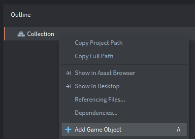
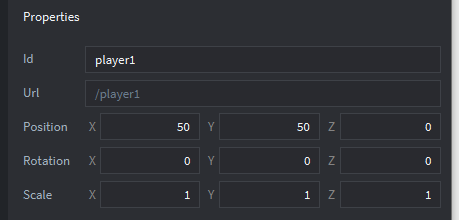
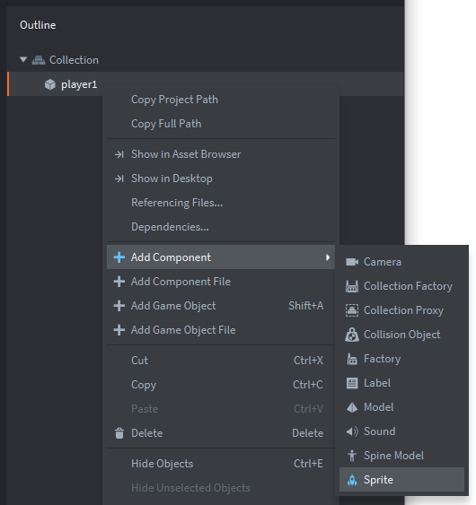

Tutorials for 2D games projects
Landers | Creating the player ship game object.
- In the assets panel, inside the 'main' folder, double click the 'main.collection' file.
- In the outline panel, create a new game object with the 'Id' property set to 'player1', and the X and Y position to be 50, 50.
Step-by-step guide
- In the outline panel, right click 'Collection' and select, 'Add Game Object'.

- In the properties panel, change the 'Id' property to, 'player1'.
- Set the 'position' properties for X and Y to both be 50.

- In the outline panel, right click 'Collection' and select, 'Add Game Object'.
- Create a sprite component for player1 with the default animation set to 'forward'.
Step-by-step guide - In the outline panel, right click the 'player1' game object and select, 'Add Component', 'Sprite'.

- In the properties panel, set the 'Image' property to be, '/main/graphics.atlas'.
- In the properties panel, set the 'Default Animation' property to be, 'forward'.
- Save the changes by pressing CTRL-S or 'File', 'Save All'.
- Run your game at this point. You should see the player ship animating at the bottom of the screen.

The ship doesn't move yet because we haven't written the handling script. Stage 2c >
 Craig'n'Dave | Version 1.3
Craig'n'Dave | Version 1.3